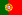

2018 월드컵 소개
2018년 FIFA 월드컵(영어: 2018 FIFA World Cup)은 FIFA 주관으로 4년마다 한 번씩 열리는 FIFA 월드컵의 21번째 대회이다. 이 대회는 2010년 12월 2일, 2018년 FIFA 월드컵 개최국 선정을 통해 개최권을 따낸 러시아에서 2018년 6월 14일부터 7월 15일까지 열릴 예정이다. 이번 FIFA 월드컵은 독일에서 개최한 2006년 이후 12년 만에 유럽에서 열리는 대회이다. 대회 본선에는 32개국이 참가하는데, 예선전을 통과한 31개국과 주최국인 러시아가 본선에 합류했다. 총 64경기가 11개의 도시에 위치한 12개의 경기장에서 치러진다. 결승전은 모스크바의 루즈니키 경기장에서 열린다. 대회 우승국은 2021년 FIFA 컨페더레이션스컵 진출 자격이 주어진다.
지역 예선에 관하여
대회 개최국 자격으로 본선 자동 진출 자격을 얻은 러시아를 제외하고, FIFA 회원국은 예선을 통해 진출 자격을 획득할 수 있다. 미얀마는 오만과의 2014년 FIFA 월드컵 예선 경기에서 일어난 문제로 인해 대회 참가 금지령이 내려졌지만, 항소를 보내 철회했고, 대신 홈 경기를 제3국에서 치러야 했다. 2015년 3월 12일, 대회 예선을 앞두고, 짐바브웨는 주제 클라우지네이 감독에 급여를 지급하지 않은 것으로 실격당했다. 인도네시아 또한 예선 시작 전에 실격당했는데, 이는 정부의 인도네시아 축구 협회 간섭에 따른 징계였다. 예선 추첨식은 2015년 7월 25일, 모스크바 시간(UTC+3)으로 18:00에 상트페테르부르크의 스트렐나에 위치한 콘스탄티놉스키 궁전에서 진행되었다. AFC와 CONCACAF의 예선 경기는 추첨 전인 2015년 3월에 이미 시작되었다. 2015년 6월 30일, FIFA 행정 위원회는 FIFA 상임 회의를 통해 각 대륙 연맹에 배당된 진출국 수를 조정하지 않기로 결정했다. 2016년 5월 13일, 지브롤터와 코소보가 FIFA 회원으로 승인되어 FIFA 월드컵 예선에 참가할 수 있게 되었다.
개최 도시 및 경기장
러시아는 다음의 도시에 FIFA 월드컵을 개최하기로 결정했다: 니즈니노브고로드, 로스토프나도누, 모스크바, 볼고그라드, 사란스크, 사마라, 상트페테르부르크, 소치, 예카테린부르크, 카잔, 칼리닌그라드.
선수들이 광대한 국토를 이동하는데 이동 시간을 최소화 하기 위해 개최 도시는 모두 유럽 러시아 내에 있거나, 바로 외곽에 위치했다. 유치 경쟁의 평가 보고서에서는 다음과 같이 기록되었다: "러시아는 유치 경쟁에서 13개의 개최 도시에 16개의 경기장을 제시하여 FIFA의 최소 조건을 뛰어넘었다. 16개중 3개의 경기장이 보수될 예정이며 13개가 신축될 예정이다." 2011년 10월, 러시아는 개최할 경기장의 수를 16개에서 14개로 줄였다. 모스크바 지역의 포돌스크 경기장 공사는 지역 정부에 의해 계획이 취소되었고, 옷크리티예 아레나는 디나모 경기장과 어느 경기장을 우선으로 지을지 경쟁했다. 개최도시 선정은 2012년 9월 29일에 마무리되었다. 개최 도시의 수는 크라스노다르와 야로슬라블이 최종 명단에서 탈락하면서 11개로 줄어들었교, 경기장은 12개가 되었다. 제프 블라터는 2014년 7월, 러시아의 경기장 완공에 관한 우려를 표명하며, 대회에 쓰일 경기장의 수를 12개에서 10개로 줄여도 좋다고 허락했다. 그는 "우리는 남아프리카 공화국의 경우처럼 한 경기장, 아니 둘이나 셋이 경기장에 문제가 생기는 이런 상황에 다시 놓이지 않을 것입니다."라고 덧붙였다. 2014년 10월, 관계자가 러시아를 처음으로 방문했는데, FIFA 조사 위원회와 그 수장인 크리스 운거는 상트페테르부르크, 소치, 카잔, 그리고 모스크바의 두 경기장을 돌아보았다. 그들은 준비 상황에 만족감을 드러냈다. 2015년 10월 8일, FIFA 및 현지 조직 위원회는 대회 기간동안 사용될 공식 경기장 명칭에 합의를 보았다.
아래의 슬라이드 쇼 사진을 클릭하여 경기장의 자세한 정보를 알 수 있다.

칼리닌그라드 경기장
일정 및 선수 명단
| 날짜 | 시각 | 경기장 | 라운드 | 경기 | 팀1 | 결과 | 팀2 |
|---|---|---|---|---|---|---|---|
| 목요일 6월 14일 |
17:30 | 루즈니키 스타디움 | 개막식 | ||||
| 조별 리그 1차전 | |||||||
| 18:00 | 루즈니키 스타디움 | A조 | 1 | 러시아 |
5-0 | ||
| 금요일 6월 15일 |
17:00 | 예카테린부르크 중앙경기장 | 2 | 이집트 |
0-1 | 우루과이 | |
| 18:00 | 크레스톱스키 스타디움 | B조 | 3 | 모로코 |
0-1 | 이란 | |
| 21:00 | 피시트 올림픽 스타디움 | 4 | 포르투갈  | 3-3 | |||
6월 16일 |
13:00 | 카잔 아레나 | C조 | 5 | 프랑스 |
2-1 | 오스트레일리아 |
| 19:00 | 모르도비야 아레나 | 6 | 페루 | 0-1 | |||
| 16:00 | 옷크리티예 아레나 | D조 | 7 | 아르헨티나 | 1-1 | 아이슬란드 | |
| 21:00 | 칼리닌그라드 스타디움 | 8 | 크로아티아 | 2-0 | |||
| 화요일 6월 19일 |
15:00 | 모르도비아 아레나 | H조 | 15 | 콜롬비아 | - | |
| 18:00 | 옷크리티예 아레나 | 16 | 폴란드 | - | |||
| 조별 리그 2차전 | |||||||
| 21:00 | 크레스톱스키 스타디움 | A조 | 17 | 러시아 |
- | ||
| 수요일 6월 20일 |
18:00 | 로스토프 아레나 | 18 | 우루과이 | - | ||
| 15:00 | 루즈니키 경기장 | B조 | 19 | 포르투갈 | - | ||
| 21:00 | 카잔 아레나 | 20 | 이란 | - | |||